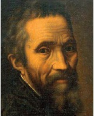

Michelangelo (1475-1564) sıklıkla İtalyan Yüksek Rönesansının en büyük sanatçısı olarak anılır. Yetenekli bir ressam, mimar, şair ve mühendis olmasının yanı sıra, kendisini her şeyden önce bir heykeltıraş olarak görmüştür. Michelangelo’yu şahsen tanıyan ve biyografisini yazan Giorgio Vasari, onun cansız mermere ruh üfleyebildiğini iddia etmiştir.

Michelangelo 1475’te, Toskana’nın Caprese kasabasında doğdu. Sıra dışı yetenekli bir genç olarak, Medici ailesinden Muhteşem Lorenzo’nun zenginliği etrafında toplanan entelektüel ve sanatsal çevreye katılmak üzere Floransa’ya davet edildi. Floransa’dan Roma’ya gitti ve burada 1499’da tamamladığı “Pieta” (oğlunun cansız bedenine kapanmış yas tutan Meryem Ana) heykelini yapmakla görevlendirildi.
Michelangelo 1501’de Floransa’ya döndü ve burada ünlü heykeli “Davut” üzerinde çalıştı. Seneler sonra Roma’ya geri çağrılarak Papa II. Julius’un mozolesi için gerçeğinden kırk kat daha büyük, ayrıntılı bir anıt tasarlaması ve yapması istendi. Bu proje Papa’nın Michelangelo’dan Sistin Tapınağı’nın tüm tavanına resim yapmasını istemesiyle bölündü. Duvar resimlerinde çok az bir çalışma tecrübesi olan genç sanatçı bu görevi sadece dört yıl içinde tamamladı.
Tavan biter bitmez Michelangelo Papa’nın mozolesine geri döndü ve 1513 ile 1516 yılları arasında “Musa ve Ölen Köle” figürlerini oydu. II. Julius, mozolesi hazır olmadan ölünce ailesi böylesine masraflı bir anıt için ödeme yapmak istemedi ve Michelangelo aldığı işi tasarladığı şekilde bitiremedi. Hayal kırıklığına uğramıştı. Sonraki yirmi yılını çoğunlukla güçlü Medici ailesi için çeşitli projeler, en önemlisi de San Lorenzo Kilisesi’ndeki Medicilerin cenaze odası üzerine çalışarak geçirdi.
Michelangelo Sistin Tapınağı’nın mihrap duvarı üzerine “Mahşer”resmi yapmak üzere 1534’te Roma’ya döndü. Şehit Bartholomew’u kendisine benzer bir şekilde resmederek bu çalışmaya imzasını attı. Michelangelo’nun resmi tamamlamasından birkaç yıl sonra, Papa IV. Paul “Mahşer”deki çıplak figürleri uygunsuz bularak bunları dökümlü bol kumaşla kaplattı. Kilisenin restorasyonu esnasında kumaşların çoğuna dokunulmadı. Michelangelo aynı zamanda Rönesans Roma’sının şehir planlamasına damga vurmuştur. 1537’de şehrin antik merkezi olan Capitoline Tepesi’nin kapladığı alanı yeniden tasarlaması istendi. Dokuz yıl sonra, ünlü kubbesini tasarladığı yeni Saint Peter’ın baş mimarı olarak göreve getirildi. Ancak maalesef tamamlanmasını göremeden seksen dokuz yaşında Roma’da öldü.
EK BİLGİ:
1. Michelangelo, Sistin Tapınağı’ndaki “Âdem’in Yaratılışı”nda Tanrı’yı, havadan gelen meleklerin oluşturduğu bir daire içinde resmetti. İki Brezilyalı doktor olan Gilson Barreto ve Marcelo de Oliviera, sanatçının bu kompozisyonu bilinçli olarak dairesel şekilli insan beyni temelinde oluşturduğunu öne sürmüştür.